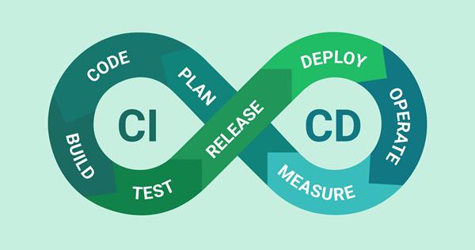
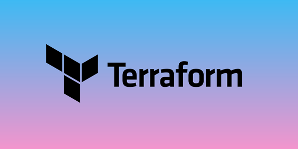

My Skills


A DevOps Engineer specializing in cloud platforms, Kubernetes, automation and CI/CD pipelines. I build scalable, secure and reliable infrastructure while improving deployment processes through automation and modern DevOps practices. I'm always ready for new challenges.


Designing and managing scalable cloud infrastructure using AWS, GCP and Azure with focus on reliability, security and performance.
Building automated CI/CD pipelines using Jenkins, GitHub Actions and Azure DevOps to enable faster and reliable software delivery.
Deploying and managing containerized applications using Docker, Kubernetes, Helm and cloud-native deployment practices.
Automating infrastructure provisioning and operations using Terraform, Bash and Python scripting.
I was born in the coastal town of Tuticorin, Tamil Nadu, a place known for its rich maritime history and cultural heritage. I was brought up in Bangalore, where I developed my passion for technology, innovation and building solutions that make an impact.
I pursued my education with a focus on technology and programming, laying a strong foundation for my career. My academic journey has equipped me with essential about in DevOps and development, driving my passion for Automation, coding and innovation.
My dream is to revolutionize the tech industry by leveraging artificial intelligence and cutting-edge technologies. I aspire to create impactful solutions that enhance everyday life and contribute to the advancement of digital innovation.
Currently working as a Technical Lead - DevOps, where I focus on improving engineering practices, streamlining deployment workflows and supporting reliable software delivery. I enjoy troubleshooting complex infrastructure challenges, optimizing systems, and creating solutions that improve performance, stability and developer productivity.